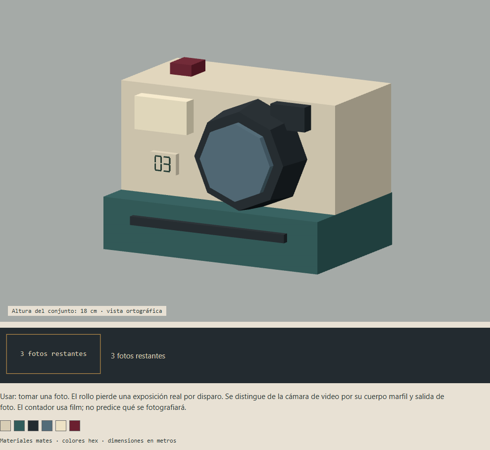

Referencias de consumibles y malditos
Capturas reales de las fábricas Three.js. Los estados del taller son ejemplos controlados. Los consumibles desaparecen al gastarse. Los estados visuales no adelantan cartas, respuestas ni el alfiler peligroso. Puedes girar el modelo y exportar una vista ortográfica PNG 2048 desde el taller.
Vista del conjunto · Ejemplo de PNG 2048 · Edición por piezas
Rosario
Usar cerca del ánima o colgarlo con G junto a una puerta. Se conserva el gasto de usos del juego. Se muestra tendido en una superficie y suspendido en la mano o en el marco de una puerta.
Ver en primera persona dentro del juego
Ruda
Usar junto a una puerta para colgarla. El ramo desaparece del inventario y se representa en el marco durante el efecto real. No es una planta decorativa intercambiable.
Ver en primera persona dentro del juego
Copal
Usar o aventar: produce la nube de copal según las reglas actuales. Brasero de barro con resina y carbón. El objeto se consume; el humo pertenece al efecto, no queda una segunda copia del brasero.
Ver en primera persona dentro del juego
Puño de ceniza
Usar o G: esparcir la ceniza sobre el piso. Bolsita de tela abierta con ceniza. Después del uso queda el rastro del juego; no queda la bolsa en el suelo.
Ver en primera persona dentro del juego
Cruz de palma
Usar o G: colocar. Impide iniciar la cacería dentro de su radio y aguanta dos cargas. Trenzado de palma estilizado. Dos ataduras muestran las cargas restantes; se retira al agotarse como en el juego.
Ver en primera persona dentro del juego
Foco de repuesto
Q junto al apagador de un cuarto con foco fundido: sustituirlo. Ampolleta facetada con casquillo y rosca. El repuesto no emite luz mientras se lleva o se deja sobre un mueble.
Ver en primera persona dentro del juego
Cámara instantánea
Usar: tomar una foto. El rollo pierde una exposición real por disparo. Se distingue de la cámara de video por su cuerpo marfil y salida de foto. El contador usa film; no predice qué se fotografiará.
Preparado
Uso intermedio Uso avanzado
Uso avanzado Configuración de mano
Configuración de mano Ver en primera persona dentro del juego
Tarot
Usar: sacar una carta del mazo. Diez cartas físicas se reducen con cards. El reverso no anuncia la carta que saldrá; sus efectos siguen siendo los del juego.
Ver en primera persona dentro del juego
Tablilla espiritista
Usar: preguntar dónde está, qué no es y si está aquí. Cada pregunta gasta cordura. Tablero facetado con alfabeto, SÍ, NO y ADIÓS. El puntero cambia solo por el número de pregunta; nunca adelanta la respuesta ni la guarida.
Ver en primera persona dentro del juego
Espejo de plata
Usar: mirar en la plata; volver a usar para dejar de mirar. Marco plateado mate, distinto del espejo de vaho. on activa la superficie; la ubicación y el costo de cordura se mantienen en la interfaz existente.
Ver en primera persona dentro del juego
Mano del mono
Usar: pedir un deseo. Tiene dos deseos y siempre cobra un precio. Mano angular de cinco dedos sobre muñeca vendada. Un dedo se cierra por deseo gastado; no anuncia si revivirá a alguien ni el precio.
Ver en primera persona dentro del juego
Muñeca de la isla
Usar: clavar un alfiler; uno de los diez puede iniciar la cacería. Muñeca de tela sin rostro, vestido vino, pelo de dos masas y costuras. Solo aparecen los alfileres ya colocados; nunca se consulta heart para dibujarlos.
Ver en primera persona dentro del juego
Pentagrama
Usar: encender una de cinco velas, gastando cordura. La quinta invoca al ánima y consume el objeto. Tabla octagonal con estrella de cinco trazos y cinco velas. Se muestran únicamente las candles reales; no se adelanta evidencia ni cacería.
Ver en primera persona dentro del juego
Radio maldita
Usar: preguntar por radio, gastando cordura. Radio de madera con rejilla, dial y asa. Solo muestra la espera real de cd: los chasquidos siguen siendo sonido, sin un radar ni un positivo nuevo.
Ver en primera persona dentro del juego
Paneles en móvil
WebKit con perfiles de iPhone 12; no es una medición de FPS de un teléfono físico.